CodeGen platform
Component matching platform
Skippr, April 2024

Background
Athena is a platform designed to match design components from Figma with code components. The main challenge lies in the system's automatic matching confidence levels, which can often be low. This low confidence doesn't necessarily reflect the accuracy of the matches but can lead to user confusion and misinterpretation of the system's capabilities.
Problem
To allow users to make informed decisions, we needed to grant them more control over the matching table and individual items. The static confidence score element was confusing for users because it didn't update when they reviewed and corrected matches. This led to discrepancies and misunderstandings about the system's performance and the correctness of the matches.
Solution
We redesigned the matching table and user interaction flow to enhance clarity and usability. The new design separates low-confidence matches and provides clear messaging to guide users through the process. These changes aim to improve the user experience and ensure that the users are guided correctly through the matching process.
Responsibilities
Product Designer
Timeline and process
2 months, pushed in June
Team
Me, Andrew Mudrov (Full Stack Engineer), Ben Brouckaert (Head of Design), Vladimir Savin (Principal Software Engineer), Natalia Tarasova (ML Engineer)
Identified Issues
This step was crucial, as it sought human input and confirmation before generating results, ensuring responsibility and ownership r emained with the engineer.
Decision making
Control
Guidance
Flexibility
Decision making
Previously, users could only match components, which limited their control over the quality of the generated code. This lack of interaction meant that potential errors or mismatches could go unnoticed, affecting the overall reliability and accuracy of the code generation.
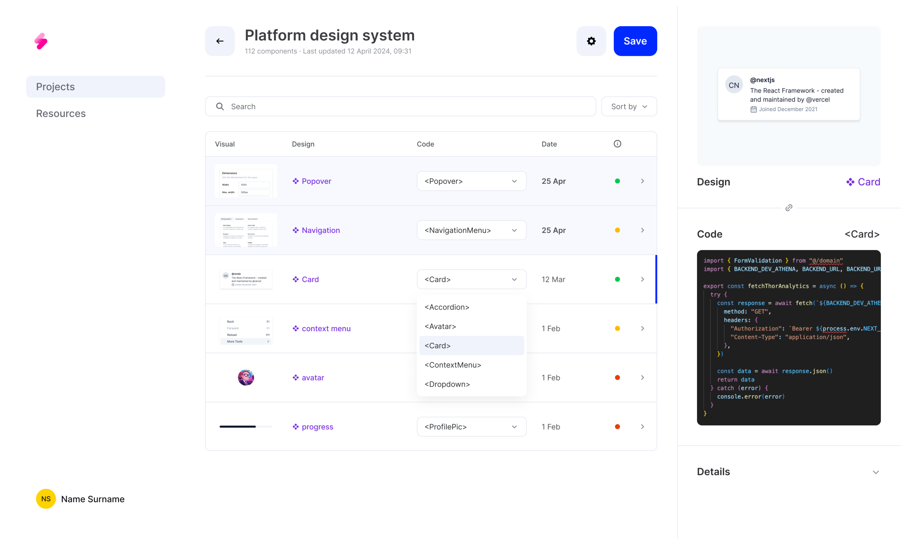To address this, I introduced the ability for users to select and then mark components as reviewed or delete them from the table. This enhancement allowed users to verify and confirm each match, ensuring that only accurate and correctly matched components were integrated into their projects
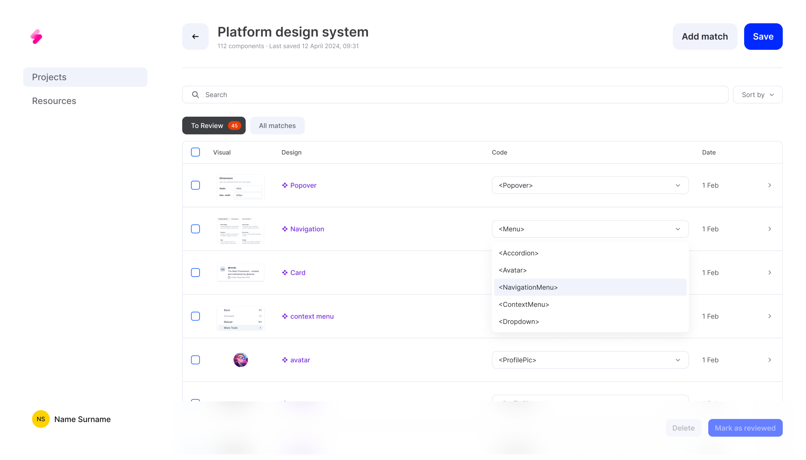 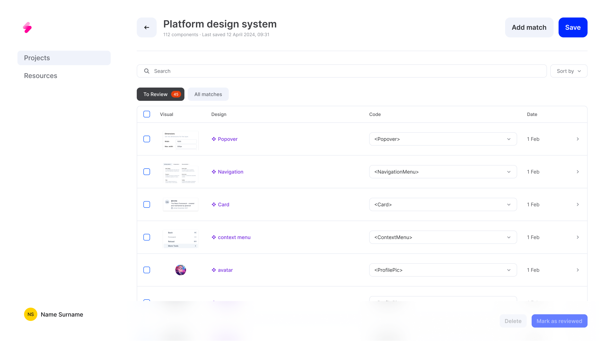 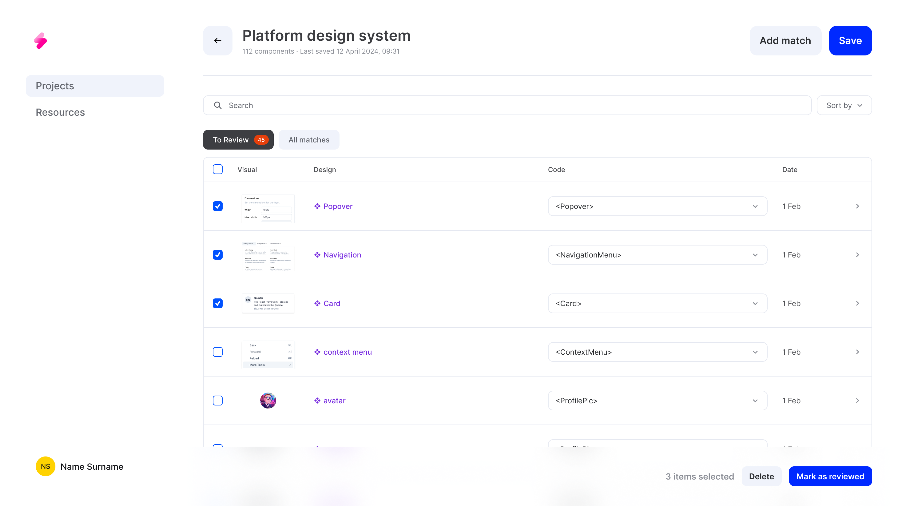 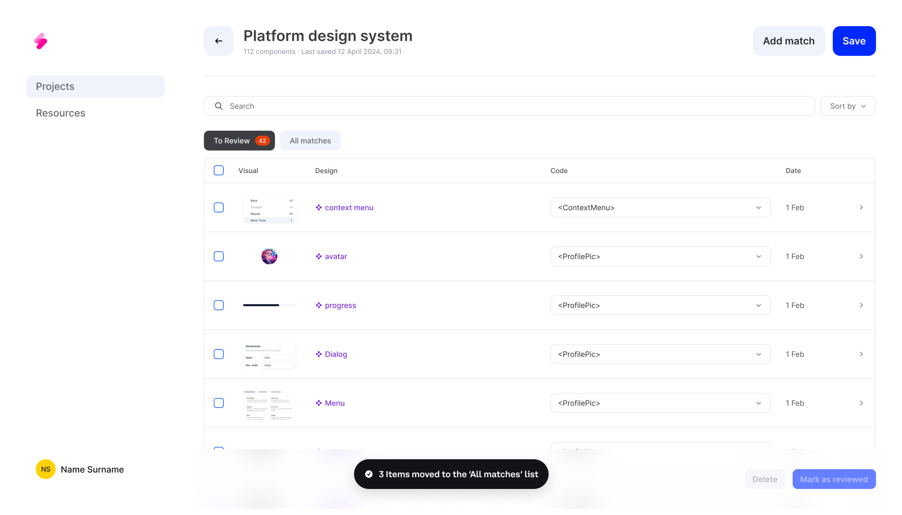Control
Users needed more control over the table and individual items to make informed decisions. The static confidence score element was confusing as it didn't change after user corrections, creating discrepancies and misunderstanding. Also, the static score, was not effective because users couldn't see the impact of their reviews and corrections.
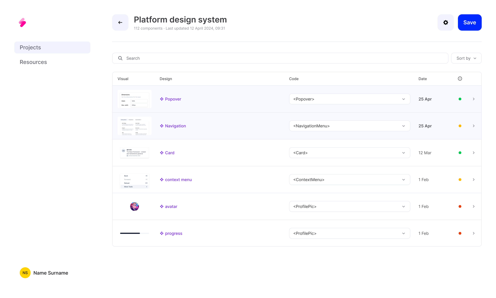We introduced a new tab for low-confidence matches, helping users focus on the most critical items first and removed the static confidence score dot to reduce confusion and ensure users understand the impact of their actions on the matching process.
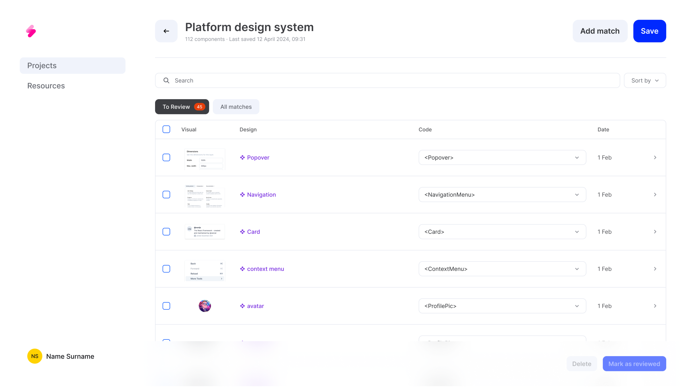Guidance
During the onboarding, no tabs would be show and the process of matching components was even crucial and complex. It was necessary to ensure users were guided correctly to benefit fully from this step.
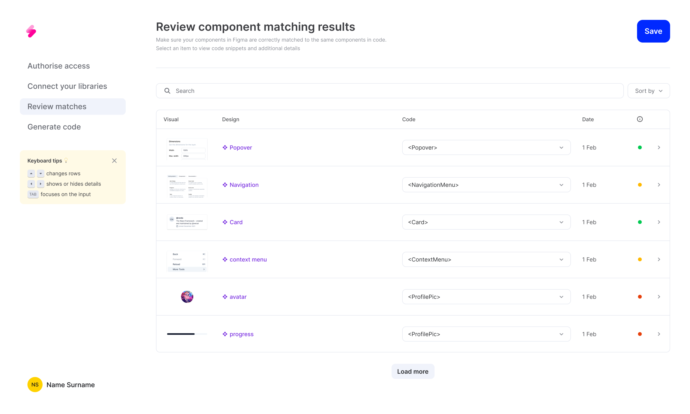Included a dedicated banner for guidance and clear messaging about the system's limitations and the need for user review to improve code generation quality.
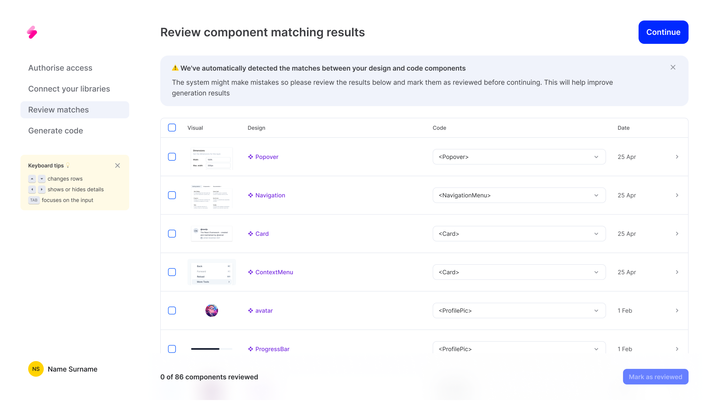Flexibility
In this new version of the platform, we aimed to make the system more flexible to accommodate changes in various design systems over time. We enabled users to add new matches available in both code and design, or delete components that didn't yet have a corresponding match on the other side. This approach ensures that the system remains adaptable and aligned with evolving design and development needs.
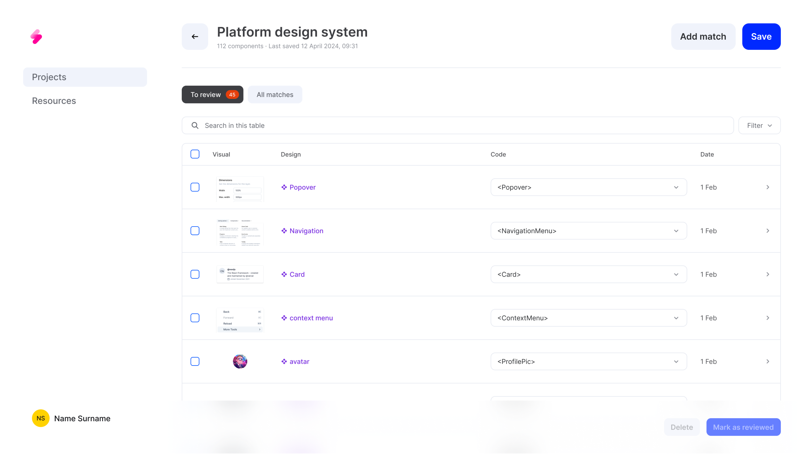 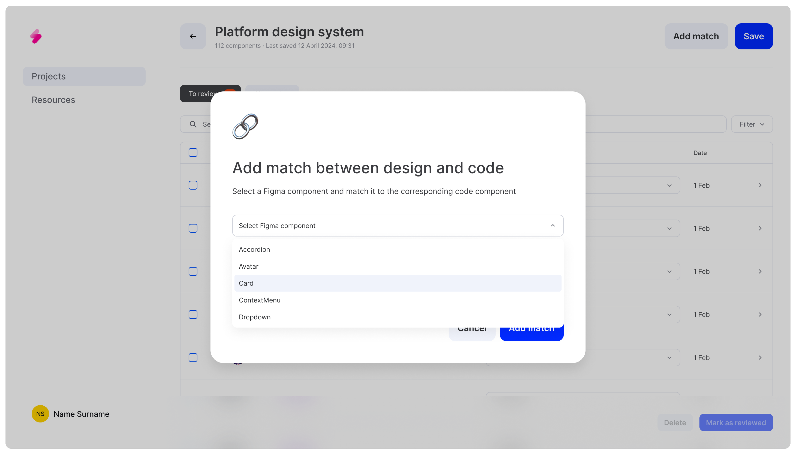 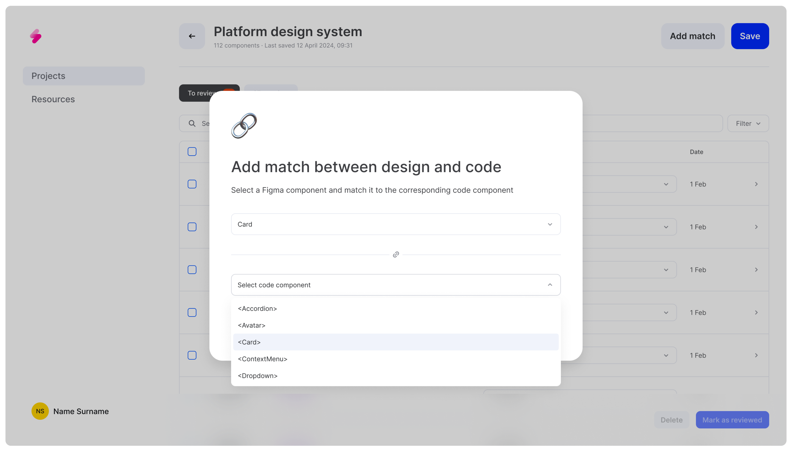 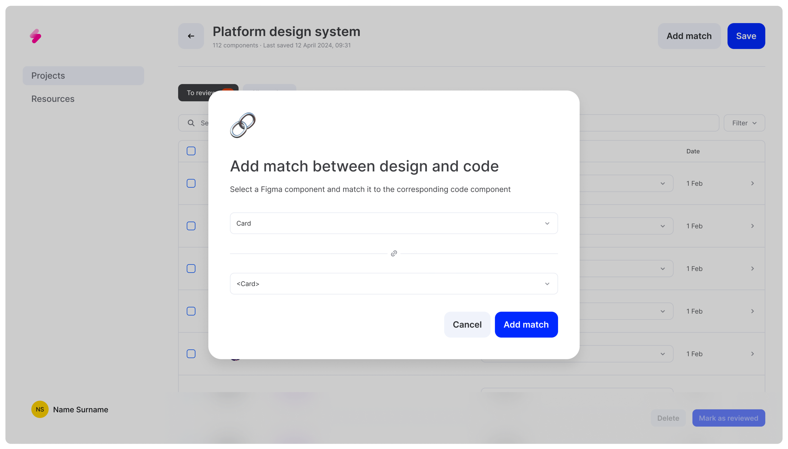 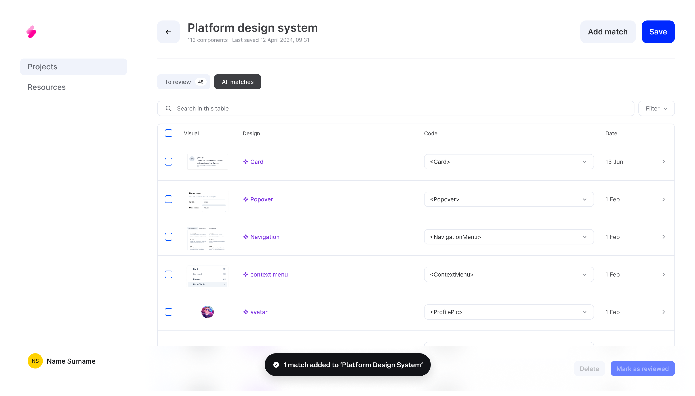
Explorations
During the design explorations, I initially explored a progress bar to track the review of component matches. However, it proved confusing, as it didn't accurately reflect the dynamic nature of the review process. Users would have misunderstood the system's state and required actions. We removed the progress bar and introduced features for marking components as reviewed or deleting them from the table, providing a more intuitive way for users to manage their workflow.
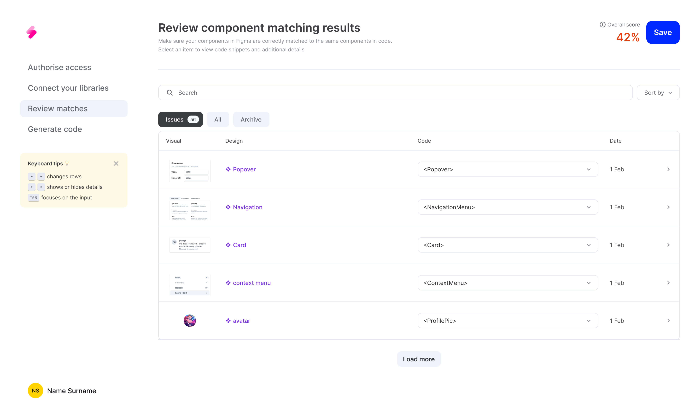Challenges
- Complex Technical Requirements: The technical specifications for the component matching system were highly intricate. Balancing the need for flexibility with the requirement for accuracy in matching components required constant iteration and refinement.
- Abstract User Input Value: Communicating the importance of user input and feedback in the process was challenging. Users needed to understand that their interactions were crucial for improving the system's accuracy and reliability, but conveying this value in a clear and motivating way required careful consideration and design.